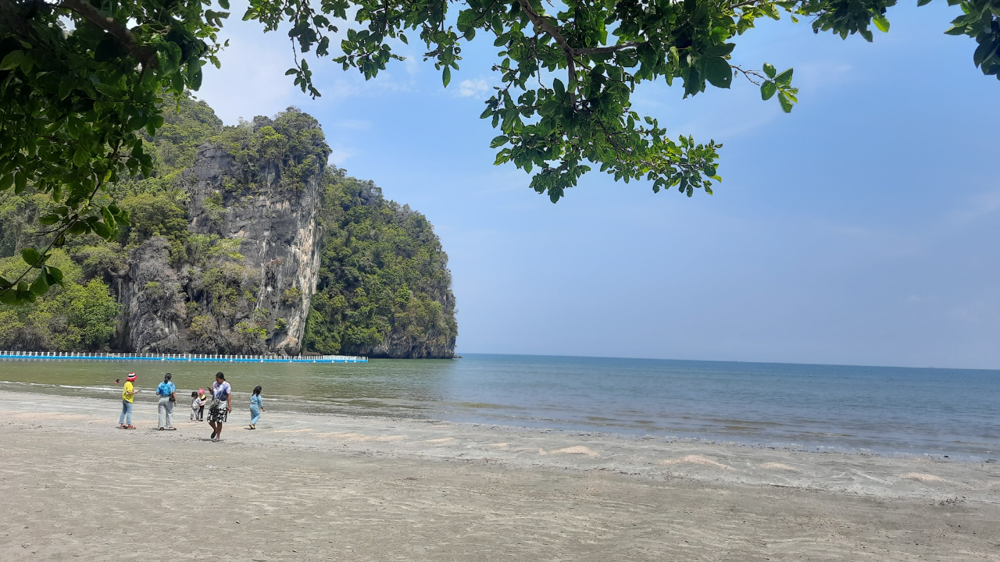
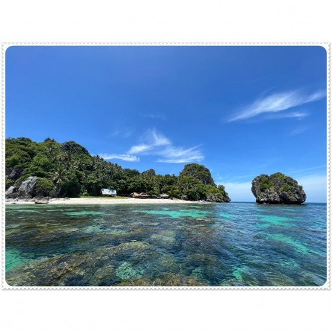
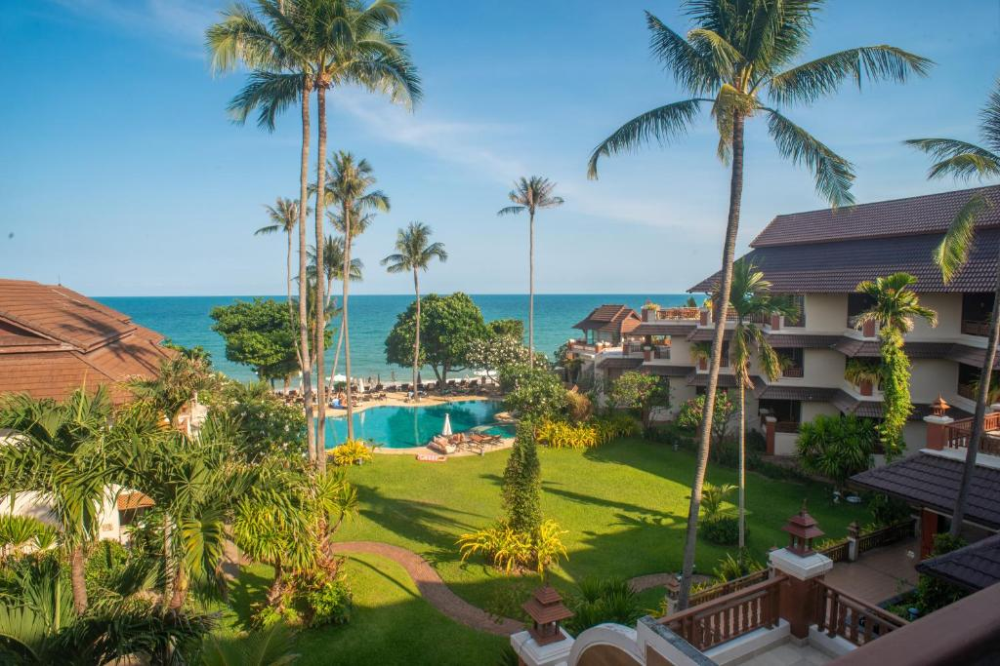
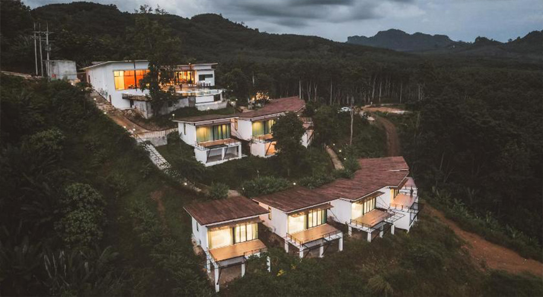

.jpg)
ข้อมูลทั่วไป
- อยู่ในเขตทะเลอันดามัน จังหวัดตรัง ชายหาดสวย น้ำทะเลใส
- มีเกาะเล็กใกล้เคียง สามารถจัดทริปล่องเรือเที่ยวเกาะเช้า–เย็น
- จุดเด่น: ถ้ำ / เกาะ / ชายหาด
อยู่ที่ไหน / การเดินทาง
- ที่ตั้ง: อุทยานแห่งชาติหาดเจ้าไหม จังหวัดตรัง — ชายฝั่งอันดามัน
- การเดินทาง: บิน/รถไฟ/รถบัส → ตัวเมืองตรัง จากนั้นต่อรถไปท่าเรือปากเมง/หาดเจ้าไหม
- เรือ: เรือหางยาว/สปีดโบ๊ทไปเกาะใกล้ เช่น (เกาะลังกาจิว/เกาะอื่น ๆ ตามโปรแกรม)
- เวลาล่องเรือ: เช้า–บ่าย ขึ้นกับสภาพคลื่น/น้ำขึ้นลง และการอนุญาตของอุทยาน
สิ่งที่ต้องทำ / ไฮไลต์
- ดำน้ำตื้น / ดำน้ำลึก ดูปะการัง
- ล่องเรือชมเกาะ / ถ้ำ
- พักผ่อนริมชายหาด ถ่ายภาพช่วงแสงสวย
เวลาเปิด / ค่าเข้าชม / ข้อจำกัด
- ขึ้นอยู่กับเวลาจัดเรือ และข้อกำหนด/การอนุญาตของอุทยาน
- บางเกาะอาจมีวันห้ามเข้า หรือจำกัดเวลาเพื่อความปลอดภัย
เคล็ดลับ / คำแนะนำ
- วางแผนเรือเช้า-เย็นล่วงหน้า และตรวจตารางกลับ
- พกชุดดำน้ำ / หน้ากาก / ชูชีพ
- ตรวจสอบคลื่น และช่วงปิด–เปิดเกาะตามฤดู
- ถ่ายภาพชายหาดช่วงเช้า/เย็น แสงนุ่มสวย
ที่พักแนะนำ (4 ระดับ)
| ระดับ | ชื่อที่พัก / ตำแหน่ง | ราคา / ข้อดี |
|---|---|---|
| พรีเมียม | รีสอร์ทริมทะเลระดับสูง | ~ 5,000–15,000 บาท/คืน — วิวทะเล บริการครบ (ค้นหา: โรงแรมตรังริมทะเลใน Booking/Agoda) |
| กลาง |  โรงแรม 3–4 ดาว ริมชายหาด โรงแรม 3–4 ดาว ริมชายหาด | ~ 2,000–6,000 บาท/คืน — เดินทางสะดวก (ดูรายการจองตรัง/เกาะใกล้เคียง) |
| กลาง-ประหยัด | เกสต์เฮาส์ / โรงแรมราคาปานกลาง | ~ 800–2,500 บาท/คืน — ราคาย่อมเยา (ดูรายชื่อที่พักตรัง/เกาะใกล้เคียง) |
| โฮมสเตย์ | บังกะโลริมทะเล / บ้านพักชุมชน | ~ 300–1,500 บาท/คืน — ใกล้ทะเล ธรรมชาติ (ค้นหา: บังกะโลริมทะเลตรัง) |